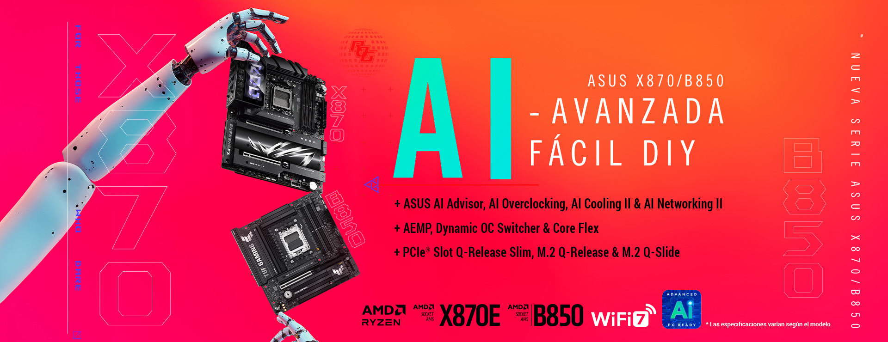

El chip de red o controlador de red es un componente integrado en la placa base o instalado como tarjeta adicional, cuya función principal es permitir la comunicación entre la computadora y una red local (LAN), asà como con internet. Es responsable de enviar y recibir datos a través de cables Ethernet o señales inalámbricas.
El chip de red está integrado en la placa base en la mayorÃa de las computadoras modernas, cerca del conector Ethernet RJ-45. En algunos casos, especialmente en equipos de alto rendimiento o estaciones de trabajo, se utiliza una tarjeta de red dedicada conectada a una ranura PCIe.
El chip de red es esencial para que una PC pueda acceder a internet, compartir archivos en una red local o conectarse a servidores. Sin él, la comunicación externa serÃa imposible. Además, un buen chip de red mejora la velocidad, estabilidad y eficiencia de la conexión.
Si el chip de red integrado se daña o deja de funcionar, es posible usar una tarjeta de red PCIe o un adaptador USB Ethernet o Wi-Fi como solución alternativa.